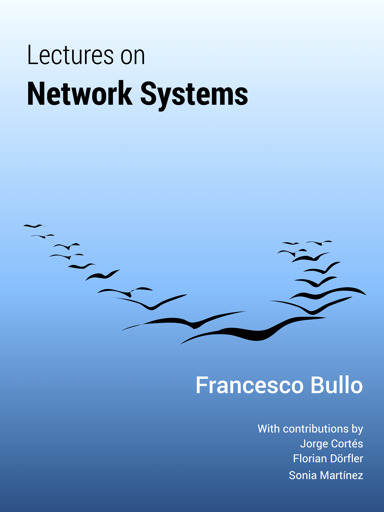
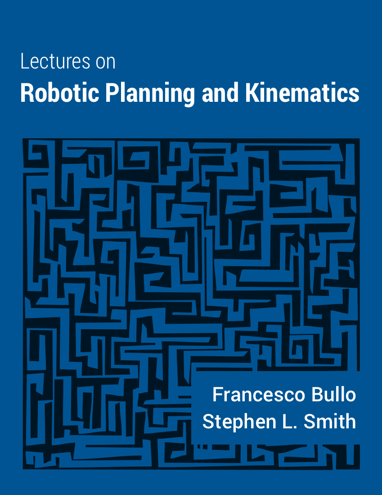
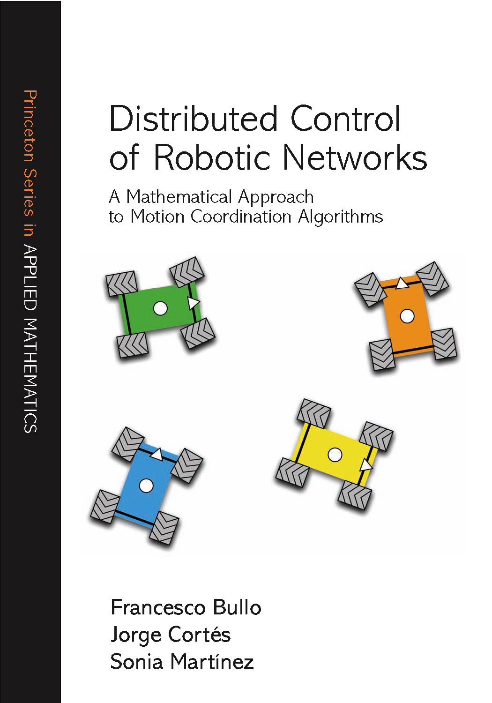

Professor Francesco Bullo - Books
Lectures on Network Systems
|
 |
Lectures on Network Systems (v0.85 May 2016 available for download) |
Lectures on Robotic Planning and Kinematics
|
 |
Lectures on Robotic Planning and Kinematics SIAM, 2016, under review |
Distributed Control of Robotic Networks
|
 |
Distributed Control of Robotic Networks Applied Mathematics Series |
Geometric Control of Mechanical Systems
 |
Geometric Control of Mechanical Systems Volume 49 of Texts in Applied Mathematics |